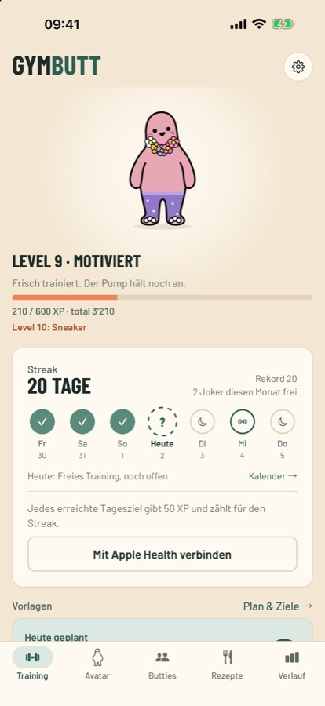
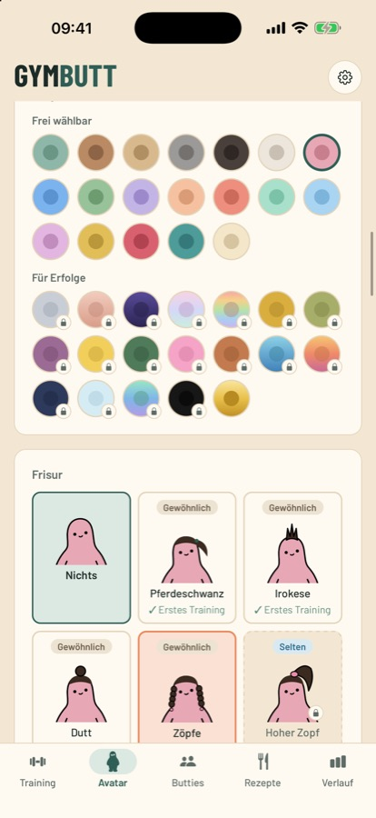
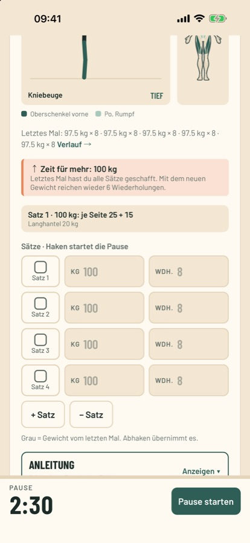
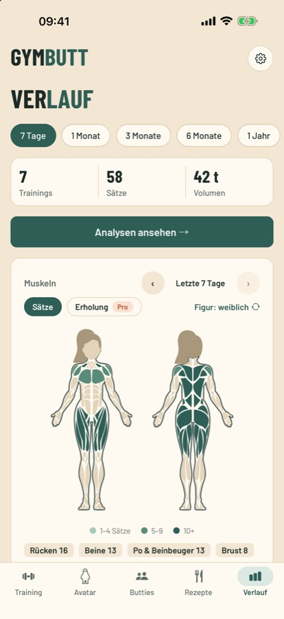
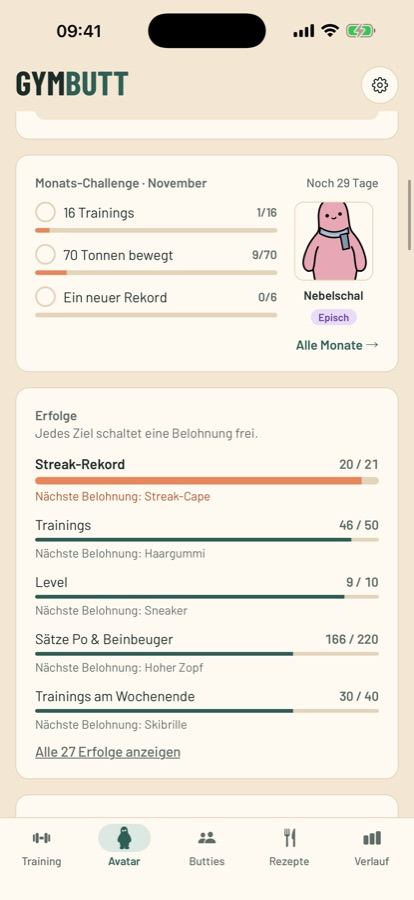
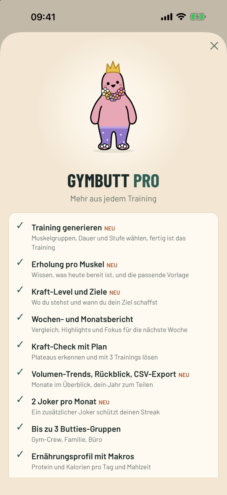

Press
Official images, app icon and copy for GymButt. Feel free to use everything when writing about the app.
GymButt is an iPhone app for strength training from Switzerland. You log sets, weights and reps, and with every workout the avatar Butt earns XP, levels up and unlocks new items like caps, hairstyles and fur colors. Free, with no ads and no account.
Facts
| Name | GymButt |
| Platform | iPhone (iOS) |
| Status | Beta, free through Apple TestFlight |
| Price | Free, optional GymButt Pro subscription |
| Languages | German, English |
| Exercises | over 300 |
| Developer | Moritz Härri, Zurich |
| Contact | gymbutt@outlook.com |
| Website | gymbutt.ch |
Longer description
Butt is your training buddy and a bit lazy at first. Every workout earns XP: Butt levels up and collects outfits, hairstyles, glasses and fur colors, looking funnier and funnier over time. Skip several days without any movement and you'll find Butt on the couch. Levels and items are never lost, though.
Underneath is a full workout tracker: ready-made workouts for beginners to pros, over 300 exercises with figures and instructions, a rest timer on the Lock Screen, weight suggestions, a muscle map, records and import from Strong and Hevy. In Butties, small groups of friends train together without a leaderboard. Workouts, weights and health data stay on the iPhone.
App icon

Screenshots
Click an image for full size (1320 × 2868 px, 6.9-inch iPhone). The app interface in the screenshots is in German.


Download


Download


Download


Download


Download

Download

Download


Download

Download

Download

Download

Download